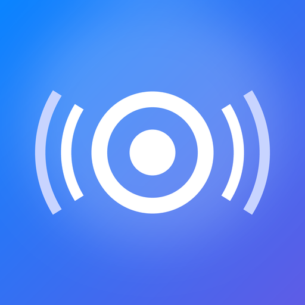

SyncYourPods
Bilgisayarın sesi, AirPods’unda.
Bluetooth olmadan.
iPhone
Bu sayfayı iPhone’da Safari ile aç ve dokun.
iPhone’a yükle- “Yükle”ye dokun, ana ekranda simgenin dolmasını bekle.
- İlk açılışta “yerel ağ” iznine İzin Ver de.
Yalnız kayıtlı iPhone’lara kurulur.
Windows
Windows 10 ve 11. Kurulum yok, tek dosya (1,5 MB).
Windows için indir- Dosyayı aç. “Windows bilgisayarınızı korudu” derse Ek bilgi → Yine de çalıştır.
- Güvenlik duvarı sorarsa Özel ağlara izin ver.
- iPhone ilk bağlandığında çıkan pencerede Evet de. Saatin yanındaki simgeden yönetilir.
Bilgisayar açıldığında kendiliğinden başlar; tepsi menüsünden kapatılabilir.
Kendiliğinden geçiş
iPhone’da video başlayınca AirPods ona geçer, bilgisayardaki medya duraklar. Bitince bilgisayar kaldığı yerden sürer.
Düşük gecikme
Sıkıştırmasız ses, kendini ağa göre ayarlayan tampon. Bilgisayarda neredeyse hiç işlemci harcamaz.
Ekolayzer ve mikrofon
Hazır ve özel ekolayzer, ses yükseltici, denge, mono. AirPods mikrofonu bilgisayardaki görüşmelerde.